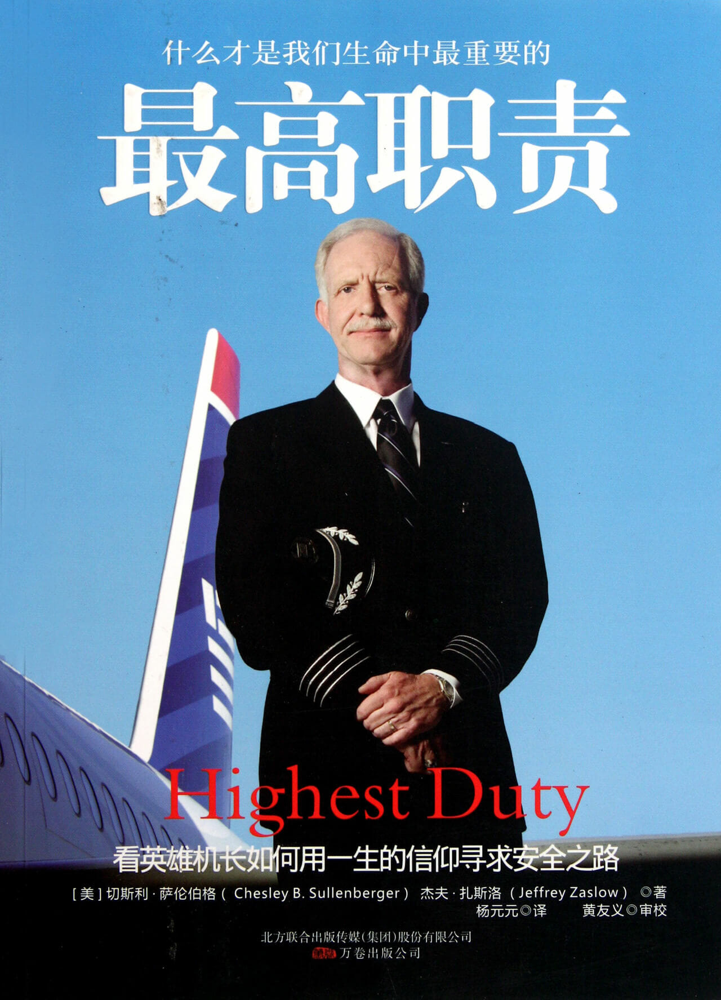

注：【】部分为心得，非原文摘抄。
- 在一个飞行员的飞行生涯中可以有成千上万次起飞着陆，大部分如过眼烟云，但总有那么几次是难以忘怀的。
- 所有的人都有他们自己的故事、动机和需求——而能帮助他们，使其如愿以偿，一种收获感在我心中荡漾。这就是我工作的动力，是一件我心向往的事情。
- 从飞机推出离开登机口，直至起飞，爬升至 10000 英尺（3048 米），航空法律规定机组不许谈论任何与飞行细节无关的闲话。
- 飞机飞越冰雪覆盖的落基山脉时，一种常常在天空中才能觉察到的心动油然而生，一种一切在我脚下的至高无上的感觉，无数颗星星以及几大行星围绕着我。欣赏着这一切，感觉我们真像与群星一起在无垠海洋般的天空中翱翔。
- “老公，”洛里说过不止一次，“生活可不是一本你们的飞行检查单！”
- 父母同孩子的关系建立在许许多多的互动和记忆里。
- 我感觉我们必须理性地看待一切，要不然我们会不断地从希望的顶峰跌落到失望的低谷。
- 时光飞逝，随着我们结婚时间越来越久，洛里和我渐渐变成有这种信念的人，那就是我们要关注我们拥有的，而不是我们没有的。
- 只要坚持通过更多磨练，就能发现更多自己还不知道的自身潜力。
- 感觉到的东西我们不一定能够认识它，只有认识了的东西我们才能更深刻地感觉它。
- 在特定的环境模式下，错误就是这样慢慢地蔓延，在不知不觉中发展，你也一直没有纠正，等到发现时一切都太晚了。
- 在生活的很多领域里，你都应该成为一个战略上的乐观主义者，即着眼长远，但同时又是一个战术上的现实主义者，即立足当前。
- 那些能从事故中幸存下来的人总会想方设法对其他人讲是如何逃脱死神魔掌的，他们把自己弄得有些未卜先知的神秘。
- 其实我们的社会就是这样运转的：我们都曾把自己和家人的安全托付给陌生人一段时间，可事情过去之后大家就再也没见过面。
- 每个人的声誉都是由日常生活的点滴塑造的。
- 眺望远方时你会感觉到一切都是可能的。
- 你不控制住局面，就会被局面所控制。
- 每个人都会对自己做事后的假设。我们有一阵子也是，但后来会认识到我们其实没有其它选择。
- 技术并不能代替经验，也不能代替技巧以及判断力。
- 机长的最高责任和义务永远是保证安全。
- 拥有权威的同时也意味着沉重的责任。
- 地球是多么美丽啊，不管是天然的还是人造的美景，幸运之神眷顾着我们，这里是我们的家园。
- 当你不再有可能完成所有的目标时，就要舍弃那些不太重要的目标，只有这样做才能履行和实现更高的目标。
- 拯救生命就是拯救整个世界。
- 在这些艰难的时刻中学会成长并且不要心怀抱怨。
- 我们所认识和爱着的每个人，我们的每一段精力，我们做出的每一个决定，我们不得不面对和接受的每一次遗憾——这一切都是让我们之所以成为自己的现实生活的组成部分。
- 培养责任性的最佳之路就是提供担负责任的机会，而且从年龄越小开始越好。
- 宁可延误，不要事故。
- 正直意味着即使不那么方便，也要做正确的事。
- “世界上最好的工作是什么？”我给她的回答是：“就是你心甘情愿去做的工作。”
- 我们必须尽力每时、每次、每件事都要做对，还要努力做到最好，因为我们不知道生命中的哪一个瞬间会决定对我们一生的评价。